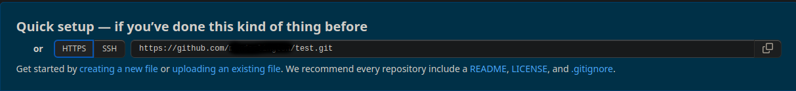

GitHow
GitHowHow To Use GitHub CLI Through Unix Shell
GitHub is used by programmers all over the world to share their files, learn how to speed up your workflow by using the Unix Shell terminal to share and clone repositories from GitHub!

Introduction
Being able to efficiently use GitHub from the terminal is a useful skill for all programmers as it allows for a more efficient workflow. Additonally, using GitHub's CLI (Command-Line Interface) allows for deeper control over how you use your machine and shows competance in the workplace.
Prerequisites
- A GitHub Account
- Linux installed onto your computer (or any other OS with Unix Shell)
- Basic knowledge of how to use Unix Shell
In this guide you will learn the following:
- How to install Git using Unix Shell
- How to set-up Git using Unix Shell
- How to use Unix Shell to access repositories
Set-Up
Step 1: Installation
A straightforward process, just enter the following into your terminal.
Step 1.1: Update Unix Shell
Run the following commands in your terminal to make sure your Unix Shell is up-to-date
sudo apt updatesudo apt upgrade
Step 1.2: Install Git
Run the following commands in your terminal in order to download and install Git.
sudo add-apt-repository ppa:git-core/ppasudo apt updatesudo apt install git
Step 1.3: Check Git Version
It is important to make sure that you have the latest version of Git installed in order to avoid missing features or bugs.
git --version
You should now have the latest versions of both Unix Shell and Git installed and now can proceed with the next step.
Step 2: Configuring Git
In order to use GitHub through the terminal, we will have to link our local installation of Git with GitHub.
Step 2.1: Logging into your account
Run the following commands to log into your GitHub account. Make sure to keep the quotation marks whilst replacing the example text with your details.
git config --global user.name "Insert Your Name"git config --global user.email "insertemail@example.com"
Step 2.2: Verifying
Run the following commands to double-check that your are now logged into your GitHub account.
git config --get user.namegit config --get user.email
You should get a response like this.
yournameyouremail@example.com
Step 2.3: SSH Key
Run the following commands to create an SSH Key. Make sure to fill in the brackets with your details (Do not include the brackets).
ssh-keygen -t ed25519 -C (your email address)
- When the terminal asks you for a location to save the key. You can enter a file location or just press to use the default.
- When the terminal asks you to enter a password, you can either leave it blank or enter a password of your choice.
Step 2.4: Linking SSH Key with GitHub
cat ~/.ssh/id_ed25519.pub
Highlight the output and copy the text, It should start with ssh-ed25519 and end with your email address.
Next, go back to the GitHub website and go to your account settings, then go into the SSH and GGP Key section, then press on the create a new SSH key button, then copy and paste the text you just copied, remember to give the key a title which you will be able to differentiate from other keys in the future.
Step 2.5: Testing Your SSH Key
Enter the following command in your terminal.
ssh -T git@github.com
If your SSH Key has been set-up properly, you should see the following output.
Hi USERNAME! You've successfully authenticated, but GitHub does not provide shell access.
Instead, you may see a warning such as the following:
The authenticity of host 'github.com (IP ADDRESS)' can't be established.ED25519 key fingerprint is SHA256:+DiY3wvvV6TuJJhbpZisF/zLDA0zPMSvHdkr4UvCOqU.Are you sure you want to continue connecting (yes/no)?
Just type yes and you should recieve the output mentioned previously.
Step 3: Accessing Repositories
To get you started with using the GitHub CLI, here are some simple commands to use to access repositories.
Step 3.1: Making a local repository folder
Enter the following commands to create a new folder. You can enter any name for the folder but I reccommend "repos".
mkdir repos
Step 3.2: Creating a respository on GitHub
Go to the GitHub dashboard, type in a name and click on create new repository.
Next, you should be greeted with a message which looks like this:
Copy the SSH.
Step 3.3: Cloning the repository
Enter the following commands:
cd reposgit clone (paste SSH here)
The first command is to open the "repos" folder.
The second command is to clone the repository in the current directory (current directory being "repos").
Step 3.3: Pushing a directory to GitHub
To be able to send files to your GitHub repository, use the following commands. Make sure that you have your respository as your current directory.
git add .
The command "git add" will add files to a list of things to be pushed off to GitHub whilst the ".' at the end stands for all files in the current directory.